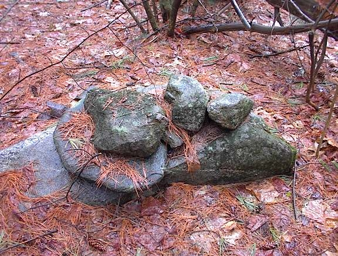
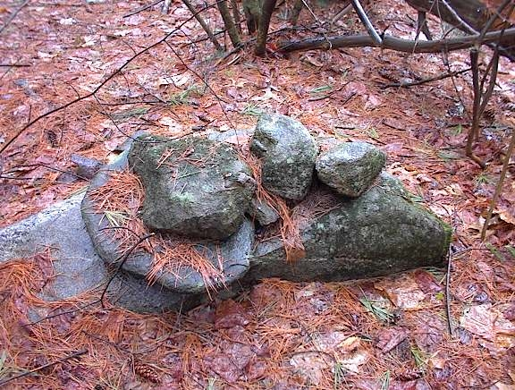

It is useful to go beyond simple logic to locate and interpret rock pile sites. For example, logic can get us to within a few hundred yards of a site but sometimes something more is needed to find the piles hidden there, low in the bushes. A friend from Carlisle says: "good instincts are 90% of it". When I am hunting for sites, I look for places with water and changing topography. But when I am in such a place and there are still many directions to explore, it is fun to let the random search direction be determined by the direction of animal tracks or the flights of birds such as grouse, woodpeckers, and grackles. I particularly like to follow deer tracks and think "the deer know where to go". It is fun to be superstitious although it is not clear if it helps. Once at a site however, some superstition or guess work is necessary to interpret it. So I propose three narratives: one about a burial place, another about a place of natural energy, and a third about an observatory.
In the woods nearby, in a swamp, is a low ridge of land extending southward with a brook to the east and a wetland to the west which join together south of the ridge. A few acres of the higher land are enclosed within a triangle of stone walls, all of which continue outward to join other walls apparently demarcating property. But here the walls meet to create a triangle of remaindered land. There is some additional structure where the brook cuts across the northeast corner of the triangle and inside the triangle are thirty or more rock piles, mostly low oval ground piles incorporating a central piece of quartz. At the corners of the enclosure are other piles suggesting deliberate shapes and built on top of support rocks. I have come to believe the site is a graveyard. The low piles are the individual graves, and the piles built on support rocks at the three corners are effigies related to burial practices and death ceremonies.
Here is a sketch of the site topography with brown topo lines, black stone walls. The dotted line indicates a cart path crossing a bridge and passing through wall openings. The bearings are not true bearings but magnetic ones.
In October 2003 I was exploring along a dirt road northward through the woods looking systematically to either side, when I came to a place with rock piles.
There were several built low to the ground incorporting quartz or lighter colored rocks. They were mostly on the western facing side of the ridge and the lighter colored rocks were mostly on the north or eastern side of the piles. It had already become a standing hypothesis that this kind of ground pile with white rocks might be burials, especially if there was a view to the west. Since the site was surrounded by water on three sides with views to the east and west, the piles here fit the profile.
However one of the first piles I saw, near the southern corner of the site, was not built on thr ground but was build prominently on a support boulder. The shape of the rocks in the pile seemed suggestive of an effigy but it was complex and damaged, so I could not make anything of it.
In the northeastern corner of the site there were a collection of four other piles built with cobbles on support rocks.
Each pile had a "head" rock sticking out the side. In these pictures, the direction of the tree shadows show that the heads are mostly facing in the same direction, and are hanging off the edge of their support in the same direction, which is roughly north. These are a type of pile sometimes called "turtles".
That is what I saw on my first visit to the site: A place surrounded by water on 3 sides with different structures inside a triangular enclosure of stone walls, including: low "burial" style piles facing west over the water, a group of "turtles" to the northeast, and a possible effigy on a boulder in the southern corner, that I could make no sense of.
On subsequent visits I noticed there was yet another pile on a support rock at the northern corner, it was very damaged; so supported piles only occured at the corners of the enclosure. I also noticed several more ground piles than on the first visit, noticed a break in the northern wall that appeared to be a deliberate entrance, and spent time studying the curious wall structure in the northeast corner where the stream crosses the walls.
This is a view westward into the site from outside the northeast corner. The entrance breaks are along the walls to the right.
An interesting thing happened on the second visit I made to the site. It was in the fall and there was a large flock of grackles in the trees over the site as I approached. Grackles are small black birds like small crows, with long tails. While I was there, they moved off but then, as I was leaving, there were so many of them flying up all around that I got a picture of some of them, even though most had already flown up and off a ways:
I decided to follow the racket of their chirping into the trees across the dirt road from the site, and found myself standing on another rock pile. So I thought this was amusing that they led me to another pile. A few days later I was exploring in a different place and again heard grackles off to the side of my path. I thought it would be fun to explore over in their direction but instead I followed a prior plan. It was a fruitless exploration so, on returning, I turned off the path towards where the grackles had been and I immediately found rock piles. I though that was very amusing. Then a couple of days later, I found another site by being systematic but, about two minutes after I located the new site, a flock of grackles arrived over head and started chirping. It was starting to look like flocks of migrating grackles are good predictors of rock pile sites. Perhaps they like to flock in the kinds of trees on the kinds of low knolls that are common sites for rock piles. Although not superstitious, today I would pay attention to a flock of grackles.
The next visit to the site was after inviting a sharp-eyed friend from Carlisle to take a look. I was confident he would see things I had missed. First he noticed the breaks in the stone walls to the east leading to a dilapidated stone bridge leading across the brook and over to the opening in the wall on the northern boundary of the triangle.
This bridge (first picture, view from the east side of the bridge) is part of the complex structure of walls on this side, which are very far from being understood. For example the culvert system (second picture, view from the south at the third culvert) indicates that the brook has not shifted its bed and the intention was for the walls to criss-cross it this way.
During a wet spring this structure results in two small ponds nearly surrounded by stone wall. The phrase "water impoundment" seems to fit. What is going on here? There are collapsed structures inside the impoundement areas, worth more study.
My friend, in addition to spotting the cart path and bridge leading into the site, took one look at the complicated pile at the southern corner and said: "that's a raven".
He pointed to a rock (the one in the middle of the picture with a sharp tip pointing to the lower right) and said it was deliberately shaped to look like the head of a crow or raven. This is useful technique: looking for one special rock which has been deliberately shaped. Here, I think he is correct because other features of the pile fall into place symmetrically to left and right of this head: a left wing formed by an oval rock placed on the support, and right wing formed by a line, carved or natural, on the support rock.
In the same timeframe as finding and exploring this site, I had a number of conversations with Indians about the use of quartz. I was trying to understand the ground piles and hoping that understanding quartz would make it easier. Back then, in 2003, I thought quartz was an indicator of purity. In the process of being corrected about this, I may have also asked about the meaning of the crow or raven in Native mythology. The answer I heard, and which I also found online, is that the crow is a messenger to the dead. Here is a story, from the Web (1).
"The Arapaho believed that the spirit world was in the West, on the same level as their world, but on mountains surrounded by water. Crow, a leader of the Spirit World and a messenger, collected the departed and brought them to the hills overlooking this sea. To the east of the sea of the dead was the boundary of the living world..."
This seems to describe the site in a remarkable way. Perhaps it is deliberately playing out the story.
Like the spirit world, the site is surrounded by water. The departed are there, looking out over the water to the west and also to the east. To the east, the brook is at the edge of the living world, corresponding to the higher land to the east of the site. The crow is there as a messenger between the departed and the land of the living. Unfortunately, the Arapaho story does not tell us anything about turtles, nor give a clue for interpreting the damaged pile in the northern corner. What the story does do is to re-enforce the speculation that this is a burial site. Since we know so little and certainly can not dig up the piles, perhaps all we can hope for is internal consistency of the hypotheses.
In particular it supports the view that low ground piles incorporating quartz are burials. This leads us to seriously consider: what is the purpose of the quartz in a burial pile? We have alread discussed that quartz does not "block", hence it may do the opposite, which is to transmit [I think this was also suggested by an Indian friend]. Pursuing this, if low ground piles with quartz are graves then perhaps the quartz plays the role of a window through which the soul can pass. Thus from the tentative idenitification of a rock pile as a crow effigy we pass (not by logic but by a tightening of the inter related speculations) to a tentative conclusion about the use of quartz. If these ideas are valid, they will be further re-enforced by observations. Otherwise, they will be contradicted and replaced.
(1) CrowHaven's Tale Collection. At http://www.geocities.com/Athens/Delphi/2235/collection.html
In the uplands north of here is a small pond surrounded by hills to the north, east, and west but with gently sloping shores and marshes to the south. On several acres of higher ground to the south there is an area bounded by stone walls with as many as one hundred rock piles, mostly built upon support rocks and having symmetries or the appearance of deliberate shapes - the type of piles I call effigies. These include good representations of woman, man, and turtle; along with more ambiguous representations possibly of deer and eagle; and still vaguer representations of heads with segmented tails, small lines of rocks, and little platforms. The view from the site is outwards across the pond and directly north to a notch in the hills. Perhaps the concentration of rock piles here is because the lake is a headwater, or perhaps it is because of the balanced and wide horizon provided by the opening to the sky above the pond.
Here is a sketch of the site topography, with brown topo lines, black stone walls, and magnetic compass bearings. The wall along the western edge of the site leads northeast out into the wetland. At first it has mounded up dirt and rocks along it but, as it continues, the wall ends and the mounded rocks and dirt continue and swell into an artificial berm. Near the end, the berm has a short well-made segment of retaining wall. To the east side of the site is a solitary outlier rock pile, an example of Twins. To the west side there is a large boulder in the back yard of a house.
By effigy, I mean a rock pile with a "head" and an axis of symmetry passing through the head. There are many piles like this at the site. Most of the piles, whether or not they are effigies, occur in groups or clusters with a space in the middle of the each cluster.
For example in the foreground of the first picture is a small group; a larger group can be seen in the background. In the second picture you get a sense of the number and density of the piles at the site.
I found the site with my friend from Carlisle in May 2000 while systematically looking for rock pile sites. More precisely, I got us within one hundred yards and he found the piles "hidden there, low in the bushes". At that time, at most three or four rock pile sites were known in this area. I had noticed a solitary rock pile in Concord formed like a seated woman; but the observation was subjective and of little importance until a very similar pile was noticed by friends in Carlisle. Any pattern can arise at random but when the same slightly complex pattern occurs more than once, it creates the suspicion that the pattern is deliberate. In this case not only were the Concord and Carlisle rock piles similar, their locations had similar topography. Both places were adjacent to a spring and both provided a view out to the southeastern sky. In addition to this, both piles were physically oriented in the same way with head to the northwest and feet to the southeast. Could these all be coincidences or could they be predictive of each other? Could we find another woman shaped pile facing this way by looking for other places with water coming out of the ground and views to the southeast?
One idea was that piles were intentionally located next to a water source - a "water" hypothesis. Another idea was that the rock piles always faced in this directions and the sites always faced to the southeast - a "direction" hypothesis. In order to test these, I located another brook close to the Carlisle site and walked up it until I got to its source. Just as I hoped, there were rock piles there. But no female figures and no view to the southeast. When I asked my friend from Carlisle to take a look, complaining that I did not find any female figures, he spent five minutes looking around, digging in the leaves, and shouted out: "here's your effigy". What he uncovered was not a woman figure. Perhaps it was a man? It faced northwest. A second rock pile nearby looked a bit like a turtle. The site faced the brook to the northwest. We continued exploring and for several weeks did not find any woman effigies until, finally, we did find one at this pond site: a reward for persistence, a third example.
 

Here is the original woman effigy found in Concord compared to the one found at the pond. In the first picture, note the vertical axis of symmetry from upper "head" rock down to the large horizontal rock which is either a pedestal or represents crosssed legs of a seated figure. The breasts are represented by the paler rock with lower edge following the line of a "W". These same features are present in the second picture but the axis of symmetry is horizontal with the "head" to the right. Compare these also with another possible example from here, or the one from Carlisle. We also found many other effigies at this pond site.

Here is the original man found along the brook, and a new example found here at the pond. It is assumed these are human figures and, lacking breasts but with prominent arms, they are identified as a man figures. Please note similar detailing of the cross-bar and of the lower edge of the base rock. It is hard to accept that such minor details might have specific meanings.
Other examples of rock pile designs which are nearly identical across many sites in this area include turtles and birds. For example, in the case of turtles, we frequently see a single rock hanging over the edge of a slightly domed support boulder. The single rock, or "head", is shaped with a pointed "beak", as on an actual turtle, and usually there is a prominent quartz vein on the dome of the support boulder. [Note that in our quest to understand the meanings of quartz and how it is used, this is another clue. In many traditional stories, the turtle holds the world and all its souls on its back.]
The "directionality" hypothesis that sites or effigies always face in certain directions was not correct, at least not in its simple form. But the "water" hypothesis, saying that rock piles occur near a water source, was confirmed and led to finding many more sites, as described here.
Of course there is much more to it than water and effigies but these do form a very common phenomenon in this area. Effigies have also been found near large boulders - sometimes on hilltops with no water. Since large boulders were regarded by the Indians as ceremonial and as providing a kind of spiritual energy, it seems likely that water sources provide a similar energy. Effigies have also been found in places with a high level of lightening activity. It is possible that lightening was yet another form of spiritual energy. If so, then it is reasonable to suppose that rock piles, in particular effigy rock piles, were constructed at these locations in order to interact with and benefit from the energy. The nature of the specific rock piles at this pond and, more particularly, the nature of their grouping implies very specific and elaborate activities and I take it that this place shares something with places of large boulders and lightening strikes - some natural energy calling for the construction of rock piles.
One group of effigies, in particular catches my attention.It lies near the center of the site with the best view outwards to the north, towards the notch and contains a large number of different effigy piles, some recognizable others not.
This panorama shows the group from left (northeast) to center (southeast) to right (southwest). In the picture, the "fish" is at the far left, the eagle at the far right, the woman is roughly in the center, and the man, turtle, and deer are not visible.
Here are pictures of the individual piles of the group layed out on the page to match their actual layout on the ground, with north at the top of the pictures. The double quotation marks acknowledge the doubtfulness of the identification.
Note the center picture is taken facing to the north from within the group, so you can see the man to the upper left and the "fish" to the upper right, beyond the deer in the picture. It seems that the deer, if that is a correct identification, is in a special position within the overall group. It is also worth paying attention to how the man and woman figures are placed - on opposite sides of the group with man to the northwest and woman to the southeast. The cross-bar which forms the man's arms is pointing due north and the site faces north but you can also see the eastern and western skies.
I have come to think that the man, woman, and turtle effigies are correct identifications. I am not at all confident of the others because the shapes are not reproduced in other places (except elsewhere at this same site there is another example like the eagle)
Notice that all the effigies within the single group represent different species. The head with segmented body occurs nearby again but in a different group. Several other groups appear to have a woman and a turtle. Does this mean we should also expect a man, and all the others to be nearby? There is much more to be learned.
The site was a very important early discovery. We located it by continuing a systematic exploration near water sources and it was perhaps the third site found that way. The site had a new examples of woman, man, turtle, and many others and remains the most complete and un-damaged effigy gallery known.
On the hills west of Beaver Brook in Boxborough, facing east over the valley is a collection of rock piles discussed in Manitou on p.279 (1). Bruce MacAlleer tracked down this site by comparing the Manitou map with a Fort Devens "stone wall" map that includes this area.
Here is Figure 11-9 from the book (reproduced by permission). To quote from Mavor and Dix: "Shown at the bottom of Figure 11-9 as a group of dots is a field of stone mounds situated on a hillside plateau. There are about 75 small piles of broken stone, obviously quarried from the surrounding ledges. Some piles are made of elongated pieces of stone piled up parallel with one another...".
There are, indeed, a large number of single piles with elongated pieces of stone on top. For example the first photo shows a pile with a single stone post extending out towards the camera. The second photo shows a similar structure. In the third picture there is a noticeable upright block. Piles with these elongated stones are everywhere at the site. They are similar to the type identified as "marker piles" in Rock Pile Types. I believe the elongated rocks help define the pile's exact locations and that this is important when lining up rock piles, which is related to sky watching.
Here is a crude sketch of the pile locations. The piles are plotted as blue dots on the topo map. At B is a large glacial erratic next to a Twins pile. At S is a seat backed against a smaller erratic - which appears to have fallen off of a sconce. At H, the highpoint on the plateau, there is a separate cluster of piles and perhaps another seat. Most of the piles lie to the east and downhill of a faint rib of bedrock which runs along the site on the line approximately from H through S.
Here is a picture of the seat at "S". This is a typical example built on the ground, as described here.
Exploring the site on the first day, it seemed there were rows of piles, three in a row...four in a row, going every which way. On subsequent visits, I continue to be overwhelmed by the number of piles and the large amounts of directional information.
It is hard to photograph examples. The first picture shows an alignment where there is another pile downhill from, but in line with, the first two. In the second picture, a split rock lines up with two boulders and a (hard to see) rock pile beyond. In the third picture, circles show five items in a row, some rocks in the ground and some piles too far in the background to make out. These straight lines, although hard to photo, are real. Their presence bolsters the assumption that marker piles are involved with alignments as well as the possibility that sometimes a split rock is split in a specific direction intentionally.
By an alignment I mean a linear structure which points to an event in the sky. In this case the aligments are formed by sequences of rock piles but it is also possible that the elongated rocks in the piles are single rock alignments. Ideas from astronomy are core topics in the book Manitou - a book which has generated a great deal of interest, including my own, in stone structures such as rock piles. Lacking knowledge of astronomy, I invited friends with compasses to take a look at the site. One of them observed that the hill across the valley to the east had solstice sunrises at either end. This means the furthest north sunrise is visible at the left edge of the hill and the furthest south sunrise is visible at the right edge of the hill. I verified something like this using Tim Fohl's "MAPTECH-Terrain Navigator" software.
Here is an plot of the topography with exaggerated elevations. The blue "V" drawn on the map has its vertex at the site and opens eastward. The left arm of the "V" is the direction of the summer solstice sunrise at 62 degrees. The right arm is the direction of the winter solstice at 124 degrees. These directions frame the hill on the other side of the valley.
Here is a picture of the hill viewed over Cisco corporate buildings. There were too many trees to get a good photo from higher up, so this picture is taken from below the site. This hill provides a basic calendar as the sun rises at different points from right to left. Although it cetainly could be used this way, I do not believe observing such a calendar was the main activity at the site.
The "plateau" where the site is located is actually a series of slopes and levels.
Most of the piles occur on the steeper parts of the slope and, from these places, the alignment points down into the valley to the east and up into the sky to the west. This suggests that the main purpose of the alignments is to view events to the west, not to the east, and higher in the sky above the horizon. Some of the elongated rocks might have been intended to be seen against the sky itself. For example there are a number of rock piles exactly on the corner between level and slope. Is there a particular view which these facilitate?
An elevated view of the sky is also suggested by an interesting pile with a hole in it. On the bottom of a lower reaches of a slope, below "S" in the site sketch, is a prominent pile built up on a support boulder. This pile has a deliberate aperature through which a small pointer is visible against the sky.
This is a picture of the pile with a "hole" or aperature, looking back down through the aperature, with the pointer in the foreground. When looking in the other direction, outward through the aperature, the view is towards a point high above the eastern horizon. Some people would think these are just coincidental details. I think they suggest that looking at the sky was a highly precise activity here. Since the site sits on the lower slopes of a larger hill behind and to the west, it would have an early sunset and be in darker shadow in the evening. The location would be particularly advantageous to watch stars and moon rise events in the early evening. Perhaps someone with a better understanding of astronomy and better ability to measure these directions can study the site more carefully in the future - there is a great deal more to be figured out here.
The site has other features besides the ones which suggest astronomy and sky watching. Lower down, below the site, on the last shoulder above the valley is a large glacial erratic with a "Twins" rock pile beside it. This suggests the site is located at a border between two territories [reasons given here]. Also, at the site, there is an unusual concentration of quartz in one place.
On one ledge there are several large blocks of quartz. They share the ledge with a small boat rudder-shaped piece of burnt rock. I suspect this is not a coincidence What does the quartz concentration mean here and why is it placed near this familiar shape? There are also other rocks throughout the site stained reddish brown, indicating that they have been burnt. Was burning done here to break up the rocks or as part of some other activity? Perhaps this has nothing to do with sky watching?
The burnt rock, the aligments which go in many directions, including directions high in the sky, the concentration of quartz in one place, and the many piles with an elongated rock on top - all these things occurring together but none are understood. We have only scratched the surface at this site; just as we have barely scratched the surface of the subject of rock piles.
(1) Manitou - The Sacred Landscape of New England's Native Civilization. James W. Mavor, Jr. and Byron E. Dix. Inner Traditions International, Ltd. One Park Street Rochester, VT 05767 (1989) pp 279-282.
Copyright © 2005 Peter Waksman. The views expressed here are the opinions of the author and are not the official opinion of NEARA.
{kind=link}
{kind=link}